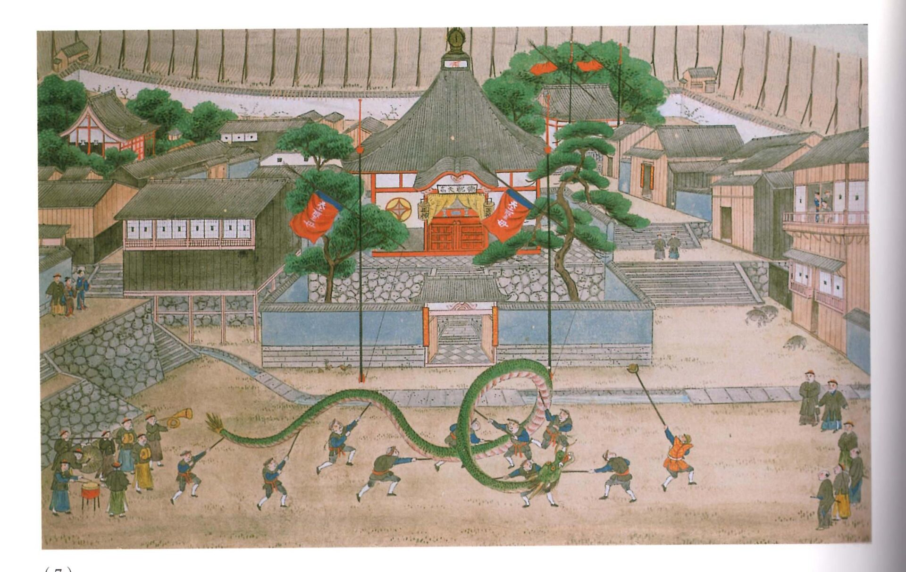
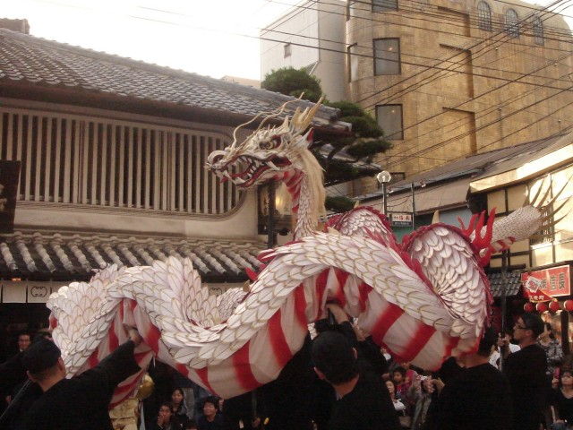
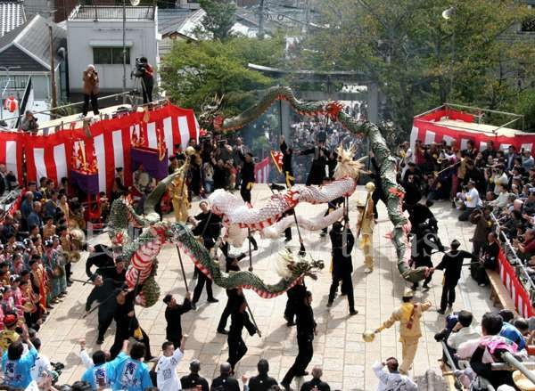

龍踊りとは
龍踊り(じゃおどり)とは、毎年10月に開催される長崎くんちの代表的な奉納踊りの一つです。
数千年前に中国で雨乞いの儀式として行われていたのが起源だと言われています。

基本的な演目
こちらでは龍の有名なお馴染みの動きについてご紹介します。
まず、初めに整列していた三匹の龍のうち、白龍と青龍が、もう一匹の青龍を残して退場します。
そして残された青龍が最初の演舞を披露します。
先頭で金色の玉を操るのが玉使い、龍の頭から尻尾までの動きを担当するのが10人の龍衆(じゃしゅう)です。
一匹目の青龍は、玉追いと呼ばれる、玉使いの操る玉を上下左右に激しく追いながら疾走し、退場していきます。
二匹目に入場してくるのが、白龍です。
白龍は少し余裕があるのか、よそ見をしながら登場してきます。やがて玉を見失います。
この時に龍衆が中央に密集してトグロを撒き、頭を左右に動かし玉を探します。この動きをずぐらといいます。


やがて玉を見つけた白龍は、玉追いをして退場していきます。
最後に、今度は三匹の龍が入場し、狭い境内を全長約20メートルの三体が同時に玉を追い、乱舞します。